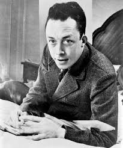
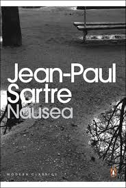
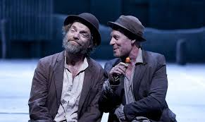
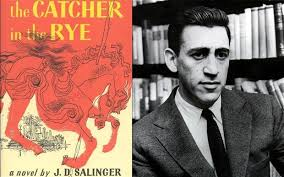

• Experimental Forms: fragmented storytelling, stream of consciousness
• Social Realism: class struggle, poverty, everyday life
• Confessional Poetry: personal trauma, mental illness, identity
INFLUENTIAL AUTHORS & WORKS
• Albert Camus — “The Stranger”
• Jean-Paul Sartre — “Nausea”
• Samuel Beckett — “Waiting for Godot”
• T.S. Eliot — “The Waste Land”
• Sylvia Plath — “Ariel”
• J.D. Salinger — “The Catcher in the Rye”
SUMMARY
Post-war literature reflects the trauma, shock, and disillusionment caused by World War II.
Writers began exploring themes of identity, loneliness, psychological conflict, and the meaning of existence.
The period also saw bold innovations in style, giving rise to experimental fiction, realism, and deeply personal poetry.
Gallery (Themes & Authors)

Albert Camus — The Stranger

Sartre — Nausea

Beckett — Waiting for Godot

Salinger — Catcher in the Rye